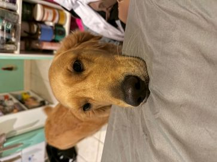
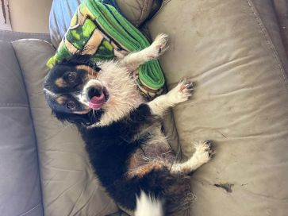
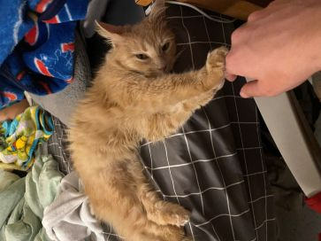

Introduction
I have had five pets throughout my life including four dogs and a cat. I grew up with dogs and I've never even considered owning a cat but as soon as I went to an adoption center for pets and met Momo I quickly changed my mind.
My Pets
Currently my family owns two dogs, Hana and Poppy, but sadly one has recently passed away, Barley. At home I live with my cat Momo who sadly has never met my family.
Hana

- Hana is a Golden Retriever and my family's fourth dog. I basically raised her since she was a puppy when my family was too busy to take care of her.
Poppy

- Poppy is a Chihuahua Beagle mix and she was our third dog. She's the most spoiled because she's the smallest and can therefore lay on your lap without crushing you.
Momo

- Momo is my pet that I rescued from a pet adoption center and has sadly only ever been in Chicago. She's by far my favorite pet and is still warming up to me.